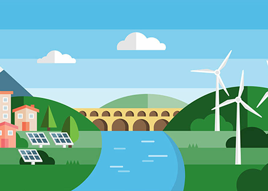
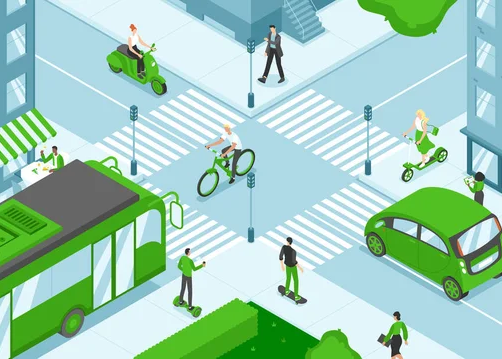

Transition to Renewable Energy
How it helps: Reduce carbon emissions from fossil fuel use.
How it can be done:
- Build more solar farms, wind turbines, and hydropower plants.
- Offer government incentives and subsidies for clean energy adoption.
- Encourage individuals and businesses to install solar panels and switch to green electricity providers.


Sustainable Transportation
How it helps: Cuts down on emissions from vehicles.
How it can be done:
- Invest in public transportation, bike lanes, and pedestrian-friendly infrastructure.
- Promote the use of electric vehicles (EVs) and fuel-efficient cars.
- Create policies to reduce air travel and support cleaner shipping options.
Protect Forests and Replant Trees
How it helps: Forests absorb CO₂ and maintain ecological balance.
How it can be done:
- Enforce laws to stop deforestation (especially in the Amazon, Indonesia, etc.)
- Launch large-scale reforestation and afforestation programs.
- Support sustainable forestry and paper alternatives to reduce tree cutting.
Adopt Sustainable Agriculture
How it helps: Reduces methane and nitrous oxide emissions from food production.
How it can be done:
- Encourage plant-based diets and reduce meat (especially beef) consumption.
- Promote organic farming and better soil management.
- Reduce food waste through education, better storage, and redistribution programs.